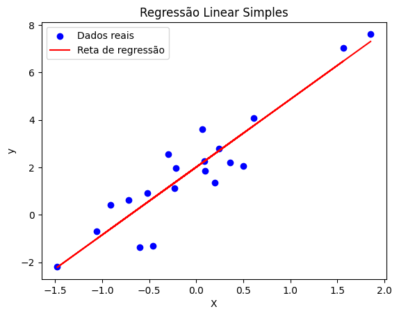

Regressão em Machine Learning¶
Nesta aula, vamos explorar os fundamentos de problemas de regressão, entender como modelar relações entre variáveis e aplicar esses conceitos em atividades práticas. Nosso objetivo é aprender a entender o problema a ser resolvido e treinar modelos de forma precisa e eficiente.
Atividades Práticas¶
As seguintes atividades foram preparadas para reforçar os conceitos abordados:
- Lab 1: Regressão Simples
Introdução aos conceitos básicos de regressão, com aplicação prática na predição de preços de casas na Califórnia. - Lab 2: Técnicas Avançadas
Exploração de métodos como regressão polinomial e XGBoost para modelagem mais robusta. - Lab 3: Predição de Preços de Notebooks
Treinamento de um modelo para prever o valor de notebooks com base em suas características.
Datasets¶
Os laboratórios utilizam os seguintes conjuntos de dados: - Housing: Informações sobre casas na Califórnia, usado no Lab 1. - Laptop Data: Dados de notebooks, usado no Lab 3.
O que é regressão?¶
A regressão é uma técnica de aprendizado supervisionado usada para prever valores numéricos contínuos a partir de variáveis de entrada (features). Em vez de atribuir classes, buscamos estimar quantidades — por exemplo, o preço de um imóvel ou a temperatura amanhã.
Classificação vs Regressão¶
| Aspecto | Classificação | Regressão |
|---|---|---|
| Saída | Categórica / Discreta | Numérica / Contínua |
| Exemplos | Spam / Sentimento / Tipo de flor | Preço / Temperatura / Altura |
| Métricas | Acurácia, Precisão, Recall | MAE, MSE, RMSE, R² |
| Exemplos de algoritmos | KNN, SVM, Random Forest (class.) | Regressão Linear, Ridge, Lasso, SVR, Árvores/Boosting |
Qual é a principal diferença entre regressão e classificação?
Ideia matemática¶
Procuramos uma função f que aproxime a relação entre entradas X e alvo y:
ε representa o ruído — sempre haverá alguma incerteza.
O que representa ε na equação y = f(X) + ε ?
Principais famílias de modelos¶
-
Regressão Linear Simples
- Uma variável explicativa; relação aproximadamente linear:
y = β₀ + β₁x + ε.
- Uma variável explicativa; relação aproximadamente linear:
-
Regressão Linear Múltipla
- Várias features:
y = β₀ + β₁x₁ + β₂x₂ + ... + βₙxₙ + ε.
- Várias features:
-
Regressão Polinomial
- Quando a relação é não linear, aumentamos a base com potências de x:
y = β₀ + β₁x + β₂x² + ....
- Quando a relação é não linear, aumentamos a base com potências de x:
-
Regressão Regularizada
- Ridge (L2): penaliza coeficientes grandes — útil quando há multicolinearidade.
- Lasso (L1): pode zerar coeficientes — ajuda a selecionar features.
- Elastic Net: combinação L1 + L2.
-
SVR (Support Vector Regression)
- Ideal para datasets pequenos/médios com relações não lineares, usando kernels (como RBF) para capturar padrões complexos sem necessidade de features polinomiais.
- Árvores, Florestas e Boosting
- Modelos como Random Forest e XGBoost são poderosos para capturar não linearidades e interações entre features. São menos sensíveis a outliers e requerem menos pré-processamento, mas podem ser mais difíceis de interpretar.
Qual método tende a zerar coeficientes, ajudando na seleção de features?
Intuição de Regressão Linear¶
A regressão linear procura a reta (ou hiperplano) que melhor explica a relação entre X e y, minimizando discrepâncias entre valores reais e previstos.
Método dos Mínimos Quadrados¶
Minimizamos a soma dos quadrados dos resíduos:
Para regressão linear simples, os coeficientes têm fórmulas fechadas úteis para entendimento:
Intuição de Pressupostos Importantes¶
- Linearidade: A relação entre X e y deve parecer uma reta (ou um plano em múltiplas dimensões). Se os dados formam uma curva, regressão linear pode não funcionar bem.
- Independência: Cada observação (e.g., preço de uma casa) não deve ser influenciada por outra.
- Homocedasticidade: Os erros do modelo (diferença entre valores reais e previstos) devem ter variação constante. Imagine que os pontos estão igualmente espalhados ao redor da reta de regressão.
- Normalidade dos resíduos: Os erros devem seguir uma distribuição normal (isso é mais importante para testes estatísticos).
- Baixa multicolinearidade: As features não devem ser muito correlacionadas entre si (e.g., se "área da casa" e "número de quartos" são quase idênticas, isso pode confundir o modelo).
Qual pressuposto implica que os resíduos tenham variância constante?
Exemplo em Python¶
from sklearn.linear_model import LinearRegression
from sklearn.model_selection import train_test_split
from sklearn.metrics import mean_squared_error, r2_score
import numpy as np
# Dados sintéticos
np.random.seed(42)
X = np.random.randn(100, 1)
y = 2 + 3 * X.ravel() + np.random.randn(100)
# Treino / teste
X_train, X_test, y_train, y_test = train_test_split(X, y, test_size=0.2, random_state=42)
# Treina
model = LinearRegression()
model.fit(X_train, y_train)
# Prediz
y_pred = model.predict(X_test)
# Avalia
mse = mean_squared_error(y_test, y_pred)
r2 = r2_score(y_test, y_pred)
print(f"Coeficiente: {model.coef_[0]:.2f}")
print(f"Intercepto: {model.intercept_:.2f}")
print(f"MSE: {mse:.2f}")
print(f"R²: {r2:.2f}")
Para visualizar o resultado:
import matplotlib.pyplot as plt
# Plot dos dados e da reta de regressão
plt.scatter(X_test, y_test, color='blue', label='Dados reais')
plt.plot(X_test, y_pred, color='red', label='Reta de regressão')
plt.xlabel('X')
plt.ylabel('y')
plt.title('Regressão Linear Simples')
plt.legend()
plt.show()

Métricas de avaliação¶
As métricas ajudam a comparar modelos e interpretar a magnitude dos erros.
MSE (Erro Quadrático Médio)¶
Penaliza erros grandes (unidade: quadrado da unidade do target).
RMSE (Raiz do MSE)¶
Tem a mesma unidade do target e é mais intuitiva que o MSE.
MAE (Erro Absoluto Médio)¶
Menos sensível a outliers que o MSE/RMSE.
R² (Coeficiente de Determinação)¶
Onde: - SSres = Σ(yᵢ - ŷᵢ)² - SStot = Σ(yᵢ - ȳ)²
R² indica a proporção da variância explicada pelo modelo. Valores mais altos são melhores, mas atenção: R² pode ser negativo se o modelo for pior que prever a média.
Exemplo em Python¶
from sklearn.metrics import mean_squared_error, mean_absolute_error, r2_score
import numpy as np
# supondo, modelo já treinado e y_true e y_pred
mse = mean_squared_error(y_true, y_pred)
rmse = np.sqrt(mse)
mae = mean_absolute_error(y_true, y_pred)
r2 = r2_score(y_true, y_pred)
print(f"MSE: {mse:.4f}")
print(f"RMSE: {rmse:.4f}")
print(f"MAE: {mae:.4f}")
print(f"R²: {r2:.4f}")